पाठवार पोस्टर संग्रह
हर पोस्टर में पाठ परिचय, मुख्य बातें, याद रखने योग्य बिंदु और स्वयं जाँचें शामिल हैं। किसी पोस्टर पर टैप करके बड़ा खोलें।
हर पोस्टर में पाठ परिचय, मुख्य बातें, याद रखने योग्य बिंदु और स्वयं जाँचें शामिल हैं। किसी पोस्टर पर टैप करके बड़ा खोलें।
पाठ 1: मातृभूमिचित्रयुक्त अध्ययन पोस्टर खोलें
पाठ 2: गोलचित्रयुक्त अध्ययन पोस्टर खोलें
पाठ 3: पहली बूँदचित्रयुक्त अध्ययन पोस्टर खोलें
पाठ 4: हार की जीतचित्रयुक्त अध्ययन पोस्टर खोलें
पाठ 5: रहीम के दोहेचित्रयुक्त अध्ययन पोस्टर खोलें
पाठ 6: मेरी माँचित्रयुक्त अध्ययन पोस्टर खोलें
पाठ 7: जलाते चलोचित्रयुक्त अध्ययन पोस्टर खोलें
पाठ 8: सत्रिया और बिहू नृत्यचित्रयुक्त अध्ययन पोस्टर खोलें
पाठ 9: मैया मैं नहि माखन खायोचित्रयुक्त अध्ययन पोस्टर खोलें पाठ 10: परीक्षाचित्रयुक्त अध्ययन पोस्टर खोलें
पाठ 11: चेतक की वीरताचित्रयुक्त अध्ययन पोस्टर खोलें
पाठ 12: हिंद महासागर में छोटा सा हिंदुस्तानचित्रयुक्त अध्ययन पोस्टर खोलें
पाठ 13: पेड़ की बातचित्रयुक्त अध्ययन पोस्टर खोलें